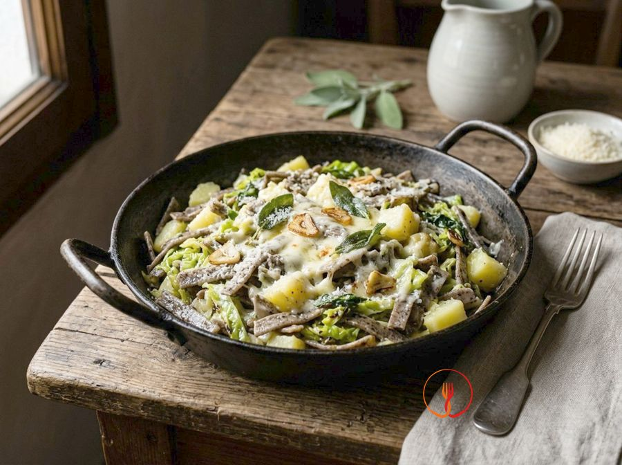

Pizzoccheri della Valtellina
Tagliatelle di grano saraceno con verza, patate, Valtellina Casera e burro all'aglio.
Ingredienti
- Pizzoccheri secchi320 gr
- Patate250 gr
- Verza250 gr
- Formaggio Valtellina Casera180 gr
- Grana Padano grattugiato40 gr
- Burro70 gr
- Aglio6 gr
- Salvia3 gr
- Sale fino8 gr
Allergeni
Glutine, Latte
Può contenere tracce di: Soia, Uova.
Procedimento
- Inizia preparando le verdure: lava la verza e tagliala a strisce di circa 2 cm, poi sbuccia le patate e riducile a cubetti regolari di circa 1,5 cm. Questa precisione nel taglio garantisce una cottura uniforme insieme alla pasta.
- Riempi una pentola capiente con circa 4 litri d'acqua e portala a bollore vivace su fuoco alto. Una volta raggiunto il bollore, aggiungi gli 8 g di sale fino, mescolando brevemente per farlo sciogliere completamente.
- Immergi le patate a cubetti e la verza a strisce nell'acqua bollente e lasciale cuocere per circa 5 minuti a fuoco medio-alto. Le verdure inizieranno a intenerirsi, rilasciando il loro aroma caratteristico che profumerà l'acqua di cottura.
- Versa i 320 g di pizzoccheri secchi nella stessa pentola con le verdure e prosegui la cottura per altri 10-12 minuti. Mescola di tanto in tanto con un cucchiaio di legno per evitare che la pasta si attacchi al fondo della pentola.
- Mentre la pasta cuoce, prepara il condimento: in un pentolino, fai sciogliere i 70 g di burro a fuoco dolce insieme ai 6 g di aglio e ai 3 g di foglie di salvia. Lascia sfrigolare finché il burro non diventa color nocciola e sprigiona un profumo intenso, poi rimuovi l'aglio se preferisci un gusto più delicato.
- Prepara i formaggi: riduci i 180 g di Valtellina Casera a scaglie sottili o piccoli cubetti per facilitarne lo scioglimento. Tieni a portata di mano i 40 g di Grana Padano grattugiato che serviranno per dare sapidità e cremosità al piatto finale.
- Passati i minuti di cottura, controlla che i pizzoccheri siano al dente e le patate morbide ma ancora integre. Scola il tutto con una schiumarola o un colino capiente, cercando di mantenere un minimo di umidità per non far seccare la pasta.
- In una pirofila precedentemente scaldata, inizia a creare degli strati alternando una parte di pizzoccheri e verdure con una manciata di Valtellina Casera e Grana Padano. Questo metodo a strati permette al calore residuo della pasta di iniziare a sciogliere il formaggio in modo omogeneo.
- Versa il burro fuso bollente, ancora sfrigolante, sopra l'ultimo strato di formaggio e pasta. Vedrai il Casera fondersi istantaneamente a contatto con il calore del burro, creando la tipica consistenza filante valtellinese.
- Mescola il tutto molto delicatamente per non rompere le patate e servi immediatamente i tuoi pizzoccheri ben caldi. La riuscita del piatto si riconosce dalla cremosità avvolgente dei formaggi che legano armoniosamente il grano saraceno alle verdure.
Valori nutrizionali (stima)
| Per porzione (365 g) | Per 100 g | |
|---|---|---|
| Energia | 2837 kJ / 678 kcal | 778 kJ / 186 kcal |
| Proteine | 26 g | 7.3 g |
| Carboidrati | 67 g | 18 g |
| di cui zuccheri | 4.1 g | 1.1 g |
| Grassi | 33 g | 9.1 g |
| di cui saturi | 20 g | 5.4 g |
| Fibre | 7.7 g | 2.1 g |
| Sale | 1.1 g | 0.3 g |
Valori stimati con l'AI su dati medi CREA / USDA: sono indicativi e non sostituiscono il parere di un medico o di un nutrizionista.
Apri la ricetta nell'app per la lista della spesa, le schede ingredienti e i negozi vicini.